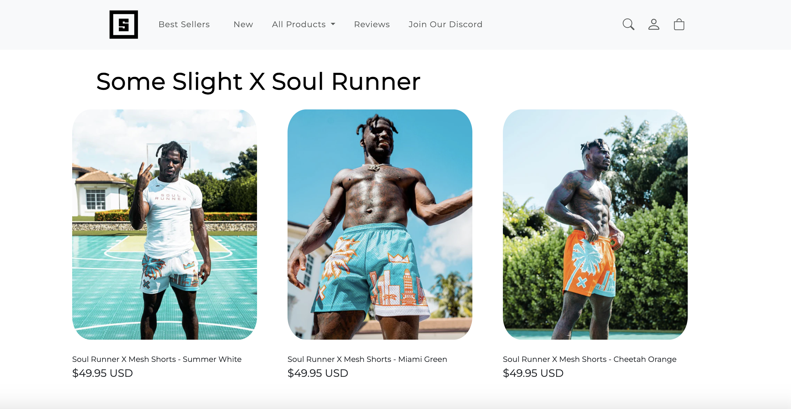

Imagine you’re painting a picture of a meadow, teeming with vibrant colors. Butterflies are fluttering about, and vivid flowers sway in the wind. The butterfly is a sun-burnt orange, but you only have red, blue, and yellow paint. So, you mix red and yellow together to get orange. But it’s not quite the orange you had hoped for: it’s too bright. You mix in a little red paint to make it darker, but that doesn’t quite do the trick. So, with your knowledge of color theory, you mix blue and yellow to make green, and add that green to the orange to darken it. And finally, you got the color you want!
What if instead of all that work, when you went to the store to buy paint, you bought a pack of assorted paints with more colors than just the primary colors? You might already have had the orange you needed or could’ve just had to adjust the orange the pack came with a little. This is the benefit of UI frameworks when it comes to working with html: even though just the raw primary colors (html) can theoretically get you any color paint you want, having more colors (UI frameworks such as Bootstrap5) to work with can help you work faster and paint more detailed pictures.
For ICS 314, we started off working with raw html, but then transitioned into a UI framework called Bootstrap5. Right away it felt confusing. We were still coding in the same language, but this time with a whole different world of vocabulary added. Using Bootstrap5, I was able to achieve layouts more effectively on webpages that would’ve been much more complicated using solely html. For example, I was able to adjust the margins and positioning of images and text a lot easier. It was also a lot easier to implement navigation bars and footers with built in classes for them.
I replicated a webpage for a small clothing brand called someslight clothing and utilizing Bootstrap5 I was able to easily replicate the navbar and divide my page into three different columns as shown in the picture. I hope to get more acquainted with Bootstrap5 and html to be able to replicate more visibly appealing websites and even maybe make them semi-functionable.

That’s my experience with UI Frameworks and Bootstrap, specifically. Having just started learning about it, I don’t have a whole lot of experience. However, one of the biggest upsides of using UI frameworks is the community. Many people who also use the same UI framework as you have been through the struggles you are going through as you learn, and there is a lot of documentation where you can learn how to fix certain problems or make things a specific way. It’s also nice that UI frameworks provide you with a lot of ready-made classes such as icons, which can make the coding process a lot smoother. Overall, UI frameworks such as Bootstrap5 lay out all the colors and paintbrushes you need to make your sunny, vivid meadow a reality.